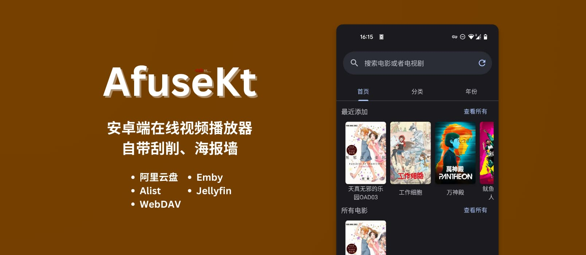

AfuseKt 从零到一实战：接入资源库 + 精准刮削全流程
第一次装 AfuseKt 不知道从哪下手？这篇跟着做，半小时内搞定 WebDAV 资源库接入和 TMDB 手动刮削，海报墙干干净净。
读完这篇教程，你能独立完成两件事：把一个 WebDAV 资源库接进 AfuseKt，并对刮削失败的文件手动指定 TMDB ID 拿到正确的海报和元数据。这两步是 afusekt官网上标注的新手入门必走流程，也是 AfuseKt 最常用也最容易卡壳的实操环节，做通之后其他协议（阿里云盘、Alist、Emby）的接入逻辑和它基本一致。
准备
动手前确认三件事：
- AfuseKt 已从官方下载安装完成并通过邮箱注册，PRO 版是否激活暂时不影响接入和手动刮削
- 你手里有一个可用的 WebDAV 服务地址（小雅、自建 NAS 都行，需要完整 URL + 用户名 + 密码）
- 手机有稳定的网络，刮削阶段要大量请求 TMDB API，4G/5G 比 WiFi 有时还靠谱一点
第一步：添加 WebDAV 资源库
打开 AfuseKt，左侧边栏找到「资源库」，点「添加资源库」，在弹出的协议列表里选 WebDAV。
这里注意，填三个核心字段：
- 服务地址：必须是完整的 URL，包括协议头和路径。小雅通常是
http://xxx/webdav结尾，自建 NAS 一般是http://NAS-IP:5005/。别漏了末尾的斜杠，WebDAV 对路径很敏感。 - 用户名 / 密码：服务提供方分配的凭证。自建 NAS 的话就是你的 NAS 登录账号。
下面有两个可选项：HTTPS 勾不勾看你的地址是不是 https 开头，别乱勾，勾错了直接 SSL 报错；连接超时默认 30 秒就行，网络特别差再加到 60 秒。
点确认，AfuseKt 会立即开始扫描目录。这个过程视资源量而定，几百部电影的话通常几十秒到一两分钟。扫描完自动进入刮削阶段——如果这是你第一次用 AfuseKt，此刻看到的应该是文件名列表，还没海报。

第二步：处理刮削失败的文件
扫描完 AfuseKt 会自动调 TMDB API 匹配元数据。但自动识别不可能 100% 准——重名作品、冷门老片、中文译名和 TMDB 英文原名对不上的，都可能识别错或者干脆识别不出来。
别慌，手动设置 TMDB ID 是最精准的补救手段。操作路径：找到识别错的那个文件（比如同一部《蝙蝠侠》被识别成了 1989 版而你要的是 2022 版），长按或点右上角更多菜单，选「编辑元数据」或「手动刮削」，粘贴 TMDB ID 就行。
怎么找 TMDB ID
TMDB ID 是每个电影/剧集在 TMDB 数据库里的唯一整数编号。最快的方式：浏览器打开 www.themoviedb.org，搜你要的片，进详情页，地址栏里的数字就是。比如 www.themoviedb.org/movie/27205，27205 就是《盗梦空间》的 TMDB ID。
还有个更懒的办法——直接在 AfuseKt 的详情页里点「重新刮削」，它会列出搜索结果让你选，选对了相当于自动填了 TMDB ID。适合搜索结果不多、一眼能看对的情况。
如果你的资源库文件名是别人分享的、不想重命名，AfuseKt 支持在文件名里直接写 TMDB ID：盗梦空间 {tmdbid:27205}.mkv，下次刮削自动识别。文件夹名也支持，一个文件夹全是同一部剧的话，在文件夹名上加一次 ID 就能批量覆盖里面所有文件。
这里有个优先级规则要记：文件级 > 文件夹级。如果同一个文件和它所在文件夹都设了 TMDB ID，以文件级为准。所以批量错了先改文件夹级，个别错了再单独改文件级，效率最高。
AfuseKt 还支持 AI 增强刮削做自动匹配，手动 ID 兜底是精度最高的方案，更多进阶玩法和参数可以翻afusekt文档。
刮削正确之后，海报墙应该长这样：
常见卡点
卡点一：WebDAV 连接直接超时
八成是地址填错了。先确认协议头（http 还是 https），再确认路径是否完整。自建 NAS 的话，5005 端口有没有被防火墙拦？公网访问的话 HTTPS 用 443 端口试试，很多运营商封了 5005。实在不行改 HTTP 80 端口，或者在 AfuseKt 设置里允许忽略 SSL 错误。
卡点二：TMDB ID 粘贴后没反应
先退出详情页再重新进入，有时界面缓存没刷新。如果还是没变化，检查网络——刮削阶段需要能访问 TMDB，国内直连偶尔会抽风，挂个代理或者重试几次一般就好。
卡点三：小雅地址连不上
公共小雅地址变更频率很高，这不是你的问题。关注分享社区拿最新地址，或者干脆自建一个 WebDAV 服务，稳定性好得多。
进阶一句话
这两步跑通之后，你可以继续开 PRO 版云同步把配置推送到 TV 端躺沙发上看，也可以绑定 Trakt 让观看历史跨设备自动记——AfuseKt 的生态比这篇教程里讲的大得多。
AfuseKt 的全套文档在三个仓库都同步维护，国内访问选 Gitee 或 GitCode 更顺：GitHub 仓库、Gitee 仓库、GitCode 仓库，每个仓库里都能找到完整的分类目录和单篇文档。